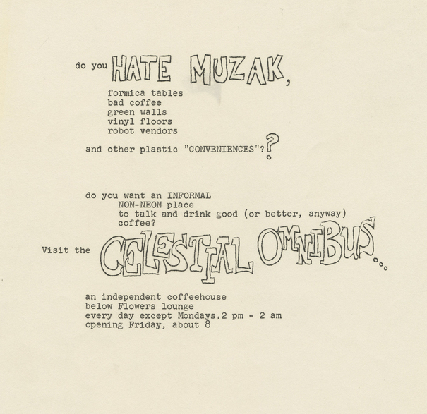
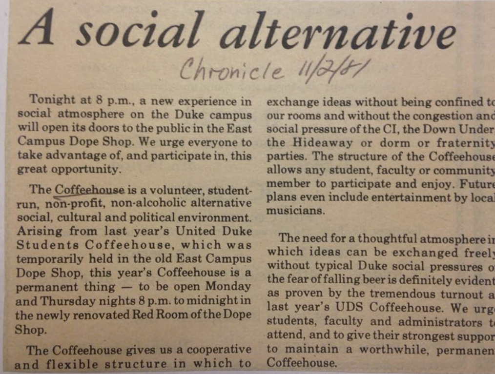
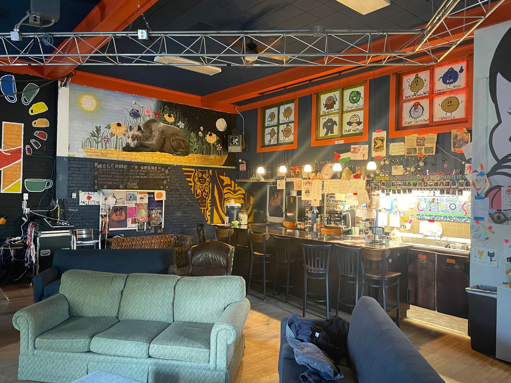

our history
(we're like, really cool)

1967
Founded in 1967 as the Celestial Omnibus Coffee House, coffeehouse began a bar and dining space in the basement of the Flowers Building on West Campus. The goal was to create as a low-pressure space where students could talk, think, and debate away from the usual Duke intensity.
1981
After closing, it was revived in 1981 by Student Housing for Academic and Residential Experimentation and relocated to its current tucked-away home in the Crowell Building on East Campus.
SHARE oversaw coffeehouse until 2003, when Duke University Union assumed leadership and renovated the space. Over the decades, coffeehouse has hosted intimate shows by artists who would later become major names, including Guided By Voices, Royal Trux, Yo La Tengo, The Ruins, Beck, and many more.


today!
Students of all sizes, shapes, colors and textures come to study and socialize at chaus. Beyond concerts, coffeehouse hosts film screenings, student performances, poetry readings, dance parties, and screenprinting festivals, continuing its legacy as an experimental and creative home for Duke’s campus community.